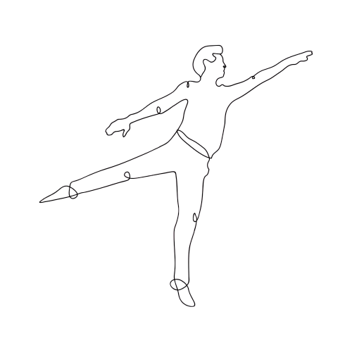
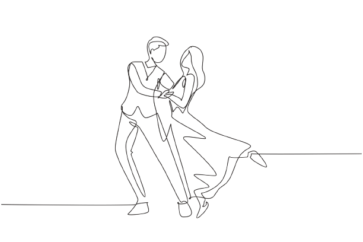
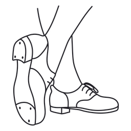
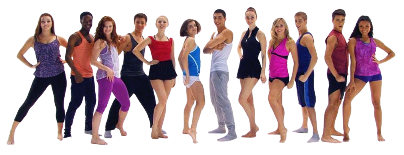

.png)
------A SUA ESCOLA DE DANÇA PREFERIDA------
Dançar e se exercitar com alegria e descontração ao som de vários ritmos musicais contagiantes.
A NextStep te oferece cursos como;
Balé Clássico
O Ballet Clássico é a modalidade mais tradicional do Ballet. Sua técnica é altamente acadêmica e muito metódica. Dentro desse estilo, temos a escola francesa, a italiana e a russa, por exemplo.

Dança Contemporânea
A dança contemporânea tem a intenção de trazer movimentos que consigam transmitir sentimentos e questionamentos, ao mesmo tempo em que aproximam a dança da vida cotidiana.

Valsa
A valsa é uma dança em dupla que é caracterizada por passos de grande amplitude e movimentos graciosos, que permitem que os dançarinos passem pelas salas de dança.

Sapateado
Sapateado é um estilo de dança, que tem como principal característica os ruídos que os dançarinos produzem com os sapatos em contato com o chão, fazendo dos pés dos dançarinos verdadeiros instrumentos de percussão.

___________________________________________________________________

--------- BENEFÍCIOS ---------
Ajuda a fortalecer os músculos;
contém movimentos que necessitam de força e resistência muscular, o ganho de massa magra é uma das consequências da dança, além de colaborar para deixar os músculos de regiões como glúteos e abdome mais firmes.
Trabalha a coordenação motora;
A dança por ser uma forma de expressão muito realizada, ela ajuda a desenvolver a coordenação motora, estimula a criatividade e a memorização do indivíduo.
Protege as articulações e melhora a postura;
A dança deixa o corpo mais flexível, o que é essencial para melhorar a postura.
Mantém o cérebro ativo;
Ao trabalhar atenção, concentração, percepção, lateralidade, ritmo e orientação espacial, estimula habilidades psicomotoras e cognitivas. Também é um ótimo exercício para a memória, já que o cérebro tende a armazenar dados que trazem maior impacto emocional.
Ajuda a manter o bom o ritmo cardíaco e pressão arterial.
Algumas modalidades de dança aumentam a frequência cardíaca equivalente a uma aula aeróbica, por exemplo. Também estimulam a circulação do sangue e melhoram a capacidade respiratória.
___________________________________________________________________
VENHA FAZER PARTE DO NOSSO TIME!
